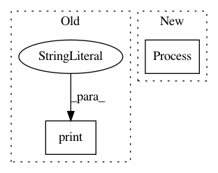

b596fa33d6b03bb858cf6599c1d37cb4a182af33,homeassistant/__main__.py,,main,#,207
Before Change
log_rotate_days=args.log_rotate_days)
else:
config_file = ensure_config_file(config_dir)
print("Config directory:", config_dir)
hass = bootstrap.from_config_file(
config_file, daemon=args.daemon, verbose=args.verbose,
skip_pip=args.skip_pip, log_rotate_days=args.log_rotate_days)
After Change
// Run hass is child process. Restart if necessary.
keep_running = True
while keep_running:
hass_proc = Process(target=setup_and_run_hass, args=(config_dir, args))
keep_running = run_hass_process(hass_proc)
if __name__ == "__main__":
In pattern: SUPERPATTERN
Frequency: 3
Non-data size: 2
Instances
Project Name: home-assistant/home-assistant
Commit Name: b596fa33d6b03bb858cf6599c1d37cb4a182af33
Time: 2016-01-26
Author: rmkraus@gmail.com
File Name: homeassistant/__main__.py
Class Name:
Method Name: main
Project Name: erikbern/ann-benchmarks
Commit Name: 71c747c0b3a1a99ab084cc206e7f5fe125f32654
Time: 2017-12-17
Author: mail@erikbern.com
File Name: ann_benchmarks/algorithms/base.py
Class Name: BaseANN
Method Name: get_index_size
Project Name: automl/auto-sklearn
Commit Name: 8442321b9b7a7cef7e3806b525965c36cea1549e
Time: 2020-09-25
Author: feurerm@informatik.uni-freiburg.de
File Name: examples/60_search/example_parallel_manual_spawning.py
Class Name:
Method Name: